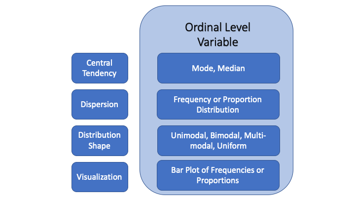

Learning Objectives
In this tutorial, you will learn how to describe an ordinal level variable, using summary statistics and plots. Specifically, we will cover:
- How to determine and describe the central tendency of an ordinal variable
- How to use the
median()function - How to summarize the dispersion of an ordinal variable
We will also practice the tools we used to generate frequency
distributions and proportions for nominal variables using the functions
in the package dplyr, and bar plots
with the ggplot() function in the package ggplot2.
Univariate Description
As we discussed in the previous lesson, the first step in any analysis is to describe the variables that are the focus of our research question in order to convey how they behave, what they look like, and, therefore, what features of the data our explanation needs to account for. We introduced central tendency, dispersion, and the shape of the distribution as ways to summarize the information in a variable in the context of nominal variables. In this tutorial, we look at the tools available for describing ordinal variables.
Practice: Identify ordinal level variables
The methods we use for the descriptive analysis of ordinal variables are almost identical to those we use to describe nominal variables, so this tutorial will allow you to practice what you’ve learned as well as extend your knowledge.
Central Tendency
We can calculate the central tendency of an ordinal variable using the mode, but, in addition, we can calculate the median.
The mode
The data set, counties, contains the ordinal variable rural_urban. It is a 9-category scale measured by the US Department of Agriculture and coded as follows:
- 1: Counties in metro areas of 1 million population or more
- 2: Counties in metro areas of 250,000 to 1 million population
- 3: Counties in metro areas of fewer than 250,000 population
- 4: Urban population of 20,000 or more, adjacent to a metro area
- 5: Urban population of 20,000 or more, not adjacent to a metro area
- 6: Urban population of 2,500 to 19,999, adjacent to a metro area
- 7: Urban population of 2,500 to 19,999, not adjacent to a metro area
- 8: Completely rural or less than 2,500 urban population, adjacent to a metro area
- 9: Completely rural or less than 2,500 urban population, not adjacent to a metro area.
Each category is more populous than the last, but the differences between categories are not identical.
We compute the mode of an ordinal variable in exactly the same fashion as for a nominal variable: we identify the most commonly occurring value from a frequency table or the table of proportions.
See if you can create a frequency and proportion table for the
variable rural_urban in the data frame
counties using the dplyr functions. Name your frequency
variable freq and your proportion variable
prop. Don’t forget to load the package with the
library() function!
# Hint 1 of 4
Start by loading the dplyr package needed to use these functions.# Hint 2 of 4
Proceed by writing a four-step pipeline: begin with the data frame that contains
rural_urban, then use group_by(), summarise(), and mutate(), each on its own line and
connected with the pipe operator.# Hint 3 of 4
In the grouping step, pass rural_urban to group_by() so that the rows are grouped by rural
versus urban. In the next step, use summarise() to create a new variable called freq that
counts the number of rows in each rural_urban group using n().# Hint 4 of 4
After you have freq, add a mutate() step to create a proportion variable called prop.
Inside mutate(), define prop as freq divided by the total of freq across both groups,
using sum(freq) in the denominator.library(dplyr)
counties %>%
group_by(rural_urban) %>%
summarise(freq = n()) %>%
mutate(prop = freq / sum(freq))Practice: Select a statement that correctly interprets the modal category
The median
We can also use the median to calculate the central tendency of an ordinal variable. The median value is the value in the middle when we list all values in rank order for all cases. Thus, it is the value at the 50th percentile: half the cases have values at or below the median and half have values at or above the median. If there are an even number of cases, we split the difference between the middle two values.
Can you tell why the median is not an appropriate measure of central tendency for a nominal variable? There is no inherent ordering to nominal variables, so we cannot rank them to find the middle value. We can’t rank racial categories or regions of the country as they have no intrinsic numeric values. If a nominal variable is coded numerically, however, it is possible – but always inappropriate – to identify a median. Don’t do it!
R comes with a simple to use function to calculate the median:
median()! Note that if the variable has any missing values
we need to specify na.rm=TRUE. Doing so removes the
observations with missing values before calculating the median. Failing
to do so, if there are missing values, will generate a median equal to
NA.
median(counties$rural_urban, na.rm = TRUE)The median category for rural_urban is the same as the mode: 6. Half the counties are in the 6th category – having an “Urban population of 2,500 to 19,999, adjacent to a metro area” – or below and half the counties are in the 6th category or above.
Dispersion and the shape of the distribution
Like nominal level variables, we use the frequency distribution or the distribution of proportions in tabular or graphical form to describe the dispersion, or spread, of the variable and to describe the shape of the distribution.
Let’s plot the frequency distribution and examine the dispersion from
a bar plot. Replace the XXXX in the following code to generate a bar
plot with ggplot(). Specify the title as “Number of US
Counties that Cast a Majority of \nVotes for the Major Party
Presidential Candidates”. Remember that the \n tells
ggplot() to add a line break to split the title into two
lines. You will need to include it in the code below. Set the title for
the x-axis label to NULL. This will omit the x-axis title.
It’s not needed here as having a title is redundant for this axis.
library(gpplot2)
ggplot(data = counties, XXXX = XXXX(x = factor(rural_urban))) +
XXXX +
labs(title = "XXXX",
subtitle = "2016",
x = XXXX,
XXXX = "Frequency",
XXXX = "Source: Linn, Nagler, Zilinsky")# Hint 1 of 3
The first XXXX inside ggplot() should be the argument named `mapping`. That argument will
hold the aesthetic instructions for the plot.# Hint 2 of 3
The second XXXX is the function that wraps x = factor(rural_urban) to tell ggplot how to
use that variable in the plot. Use the standard aesthetic-mapping function there.# Hint 3 of 3
Add the bar-chart layer before the labels. Then look at the remaining XXXX inside labs():
these are the argument names you must supply. One XXXX is the title argument (using the
full text with the \n), one is the x-axis label (set this to NULL), and the last two XXXX
are the argument names for the y-axis label and the caption.library(ggplot2)
ggplot(data = counties, mapping = aes(x = factor(rural_urban))) +
geom_bar() +
labs(title = "Number of US Counties that Cast a Majority of \nVotes for the Major Party Presidential Candidates",
subtitle = "2016",
x = NULL,
y = "Frequency",
caption = "Source: Linn, Nagler, Zilinsky")Before we interpret the plot, let’s make it more informative.
We’d like to replace the variable values 1-9 on the x-axis with
informative phrases, but each category label is quite long and would not
fit below the bars. We can solve this problem by flipping the
coordinates. This is easy to do by adding another layer to the
ggplot(). The code below illustrates the
coord_flip() function and replaces 1-9 with labels from the
codebook entry. Look carefully at the scale_x_discrete()
function and how the labels are added. I’ve also filled the bars in the
color "green" using the fill argument inside
geom_bar().
ggplot(data = counties, mapping = aes(x = factor(rural_urban))) +
geom_bar(fill = "green") +
labs(title = "USDA Urban/Rural Status",
subtitle = "US Counties in 2016",
x = NULL,
y = "Frequency",
caption = "Source: Linn, Nagler, Zilinsky") +
scale_x_discrete(labels = c("1 Million","250,000 to 1 million", "< 250,000", "20k+ near metro area", "20k+ not near metro area", "2,500-19,999 near metro area", "2,500-19,999 not near metro area", "< 2,500 near metro area", "< 2,500 not near metro area", "NA")) +
coord_flip()The frequency distribution and bar plot illustrate the central tendency, dispersion, and shape of the distribution of an ordinal variable in the same way as for a nominal variable. For this 9 category variable, we see:
- The modal category is “Urban population of 2,500 to 19,999, adjacent to a metro area”.
- The number of counties in many categories is somewhat similar. The data is highly dispersed.
- The distribution is somewhat uniform. This makes the mode less informative about the typical county’s rural-ness than if one category dominated the data, in which case the data would be unimodal. If half the counties were very urban and half very rural, the distribution would be bimodal. These distinctions are somewhat subjective, so we usually report the frequency (proportion) distribution or the bar plot and let the reader judge.
Note that we cannot easily determine the median from the plot.
Your turn
Let’s look at another ordinal variable. We will examine the variable FHStatus, Freedom House’s measure of whether a country is “Not Free” (coded 0), “Partly Free” (coded 1), or “Free” (coded 2). The variable is in the data set fHouse. The variable is ordinal rather than categorical because as you go from “Not Free” to “Free,” the country becomes freer. The variable constitutes a ranking of countries on this dimension.
First, we will generate a frequency and proportion table using the dplyr functions. You do not need to load the package again because we’ve done so in an earlier exercise. See if you can produce the table without looking at the hints. Name the counts variable freq and the proportion variable prop.
Practice: Create a frequency and proportion table for FHStatus# Hint 1 of 5
Begin by starting your pipeline with the fHouse dataset so that every subsequent step
in your code operates on the correct source of data.# Hint 2 of 5
Next, apply group_by() to FHStatus so the observations are organized by each category
before you create any summaries or new variables.# Hint 3 of 5
Use summarise() to produce a column named freq, making sure to count the number of cases
in each FHStatus group by calling n() inside it.# Hint 4 of 5
After computing frequencies, use mutate() to add a prop column defined as freq divided by
the total sum of freq across all grouped categories.# Hint 5 of 5
Keep each step connected with the %>% operator at the end of the line so the output from
one function is passed directly into the next step.fHouse %>%
group_by(FHStatus) %>%
summarise(freq = n()) %>%
mutate(prop = freq / sum(freq))Practice: Interpret the mode of FHStatus
Calculate the median.
Practice: Calculate the median for FHStatusmedian(fHouse$FHStatus, na.rm=TRUE)# Hint 1 of 3
Start by using the median() function, which computes the middle value of a numeric or
ordinal variable. You will need to supply both the dataset and the specific variable
inside its parentheses.# Hint 2 of 3
When passing the variable to median(), use the $ notation to access FHStatus from the
fHouse dataframe. Make sure the variable reference appears directly inside the median() call.# Hint 3 of 3
Because the prompt mentions handling missing values, include the na.rm = TRUE argument
inside median() so that any NA entries are ignored when computing the median. This
ensures the result is calculated correctly for this variable.A median of 1 means that the middle country in the distribution falls into the category coded as 1, which is “Partly Free.” In other words, if you lined up all countries from least free (0) to most free (2) and looked at the one in the exact center, that country’s status would be Partly Free. Note that the median of an ordinal variable depends on the order of the categories. If the coding were flipped—for example, If the ordering itself was reversed the median would change. This is why it is essential to state clearly how the categories are ordered whenever you report a median for an ordinal variable.
Let’s plot the frequency distribution as a bar plot for practice. Try
to generate the plot from scratch without looking at the hints. To
produce an informative plot, use the title “Freedom House
Ranking of Countries”, label the y axis “Frequency”,
relabel the x-axis tick marks by setting “0” to “Not Free”, “1” to
“Partly Free”, and “2” to “Free” in the labels() function
so that the axis tick mark labels. Omit the missing values from your
plot using na.translate = FALSE inside the
scale_x_discrete() function. Do not include the
subtitle or caption label. Since there is no
default value for either, this will simply omit the subtitle and caption
from the plot.
# Hint 1 of 6
Begin by calling ggplot() and supplying data = fHouse. # Hint 2 of 6
Inside ggplot(), include a mapping argument that uses aes() to specify the x-variable you
want to display as the categories in your bar chart. Be sure to wrap in the factor()
function to tell ggplot the variable is nominal. Finish the line with a + so you can add
the geometry on the following new line.# Hint 3 of 6
Add geom_bar() on its own new line to create the bars. Since you will be adding more
layers after this, end the geom_bar() line with a plus sign (+).# Hint 4 of 6
Use labs() on the next line to include the required main title and y-axis label. Leave out
the subtitle and caption entirely. End this labs() line with a + because the scale
adjustment still needs to be added afterward.# Hint 5 of 6
Add scale_x_discrete() on a new line to control the x-axis. Inside it, set na.translate =
FALSE and provide a c() vector of descriptive labels to replace the numeric tick marks.
Watch your commas and parentheses carefully. Make sure to list the labels in order, from
the one coded zero to the one coded 2.# Hint 6 of 6
Confirm that every plot layer except the final one ends with a +, and that each major
component—mapping, geometry, labels, and scale—appears on its own separate line to keep
the structure readable and correctly formatted.ggplot(data = fHouse, mapping = aes(x = factor(FHStatus))) +
geom_bar() +
labs(title = "Freedom House Ranking of Countries",
x = NULL,
y = "Frequency") +
scale_x_discrete(na.translate = FALSE, labels = c("Not Free", "Partly Free", "Free"))Let’s recreate this plot to display the y-axis in proportions. You
only have to change two lines: the geom_bar() line needs a
y aesthetic and the y axis title needs to change to “Proportion”.
ggplot(data = fHouse, mapping = aes(x = factor(FHStatus))) +
geom_bar(XXXX(XXXX = XXXX(XXXX), XXXX = XXXX)) +
labs(title = "Freedom House Ranking of Countries",
x = NULL,
y = "XXXX") +
scale_x_discrete(na.translate = FALSE, labels = c("Not Free", "Partly Free", "Free"))# Hint 1 of 3
To turn counts into proportions within geom_bar(), you need a y aesthetic that uses
after_stat(prop). This goes inside an aes() call in the XXXX so that ggplot knows
to compute proportions instead of raw frequencies.# Hint 2 of 3
Inside that aes(), one XXXX should map y to the after_stat(prop) expression, and another
XXXX should set a grouping so the proportions are computed over all bars together (use one
for the group value). Watch the commas and match all parentheses carefully in the
geom_bar() line.# Hint 3 of 3
The remaining XXXX is in labs(), where the y-axis title still refers to frequencies.
Update that quoted text so the y label correctly describes what is now being shown on the
axis: proportions rather than counts.ggplot(data = fHouse, mapping = aes(x = factor(FHStatus))) +
geom_bar(aes(y = after_stat(prop), group = 1)) +
labs(title = "Freedom House Ranking of Countries",
x = NULL,
y = "Proportion") +
scale_x_discrete(na.translate = FALSE, labels = c("Not Free", "Partly Free", "Free"))The Takeaways
Describing ordinal variables looks very much like describing a nominal variable. The only addition to our arsenal of descriptive tools is the median. To summarize what we’ve learned:
There are 3 types of descriptive information to help you convey the main features of a single variable: central tendency, dispersion, and the shape of the distribution. Each piece of information complements the others.
The appropriate tools for description depend on the level of measurement of the variable you wish to describe. The information here describes what is appropriate for ordinal variables.
- The mode is the most commonly occurring category across cases and is the only statistic appropriate for describing the central tendency of a nominal variable. It can also be used to describe the central tendency of an ordinal variable. In addition, we can use the median. The median value marks the middle value or the value at the 50th percentile when all observations’ values are rank-ordered. Both the mode and median may be more or less useful descriptions of the center of the distribution depending on the nature of the dispersion in the data, so often we present the entire frequency distribution for ordinal variables, just as for nominal variables.
- The frequency distribution, or the distribution of proportions, reveals the dispersion in the data, i.e., it tells us how many or what proportion of cases take each value of the variable. It also makes clear which category is the modal value and is a numeric representation of the distribution.
- Bar plots are often used to visualize the central tendency, dispersion, and shape of the distribution of ordinal variables in the same manner as nominal variables, particularly if the specific counts or proportions are not of central interest.
Which of these pieces of information should you present when conducting descriptive analysis on an ordinal variable? The answer is the same as for a nominal variable. The choice depends on the main feature or features of the data and what you wish to emphasize. You may report the modal category or categories, the median, and the number or proportion of cases in the category, or you may choose to present the entire distribution, either in a table or a plot.
